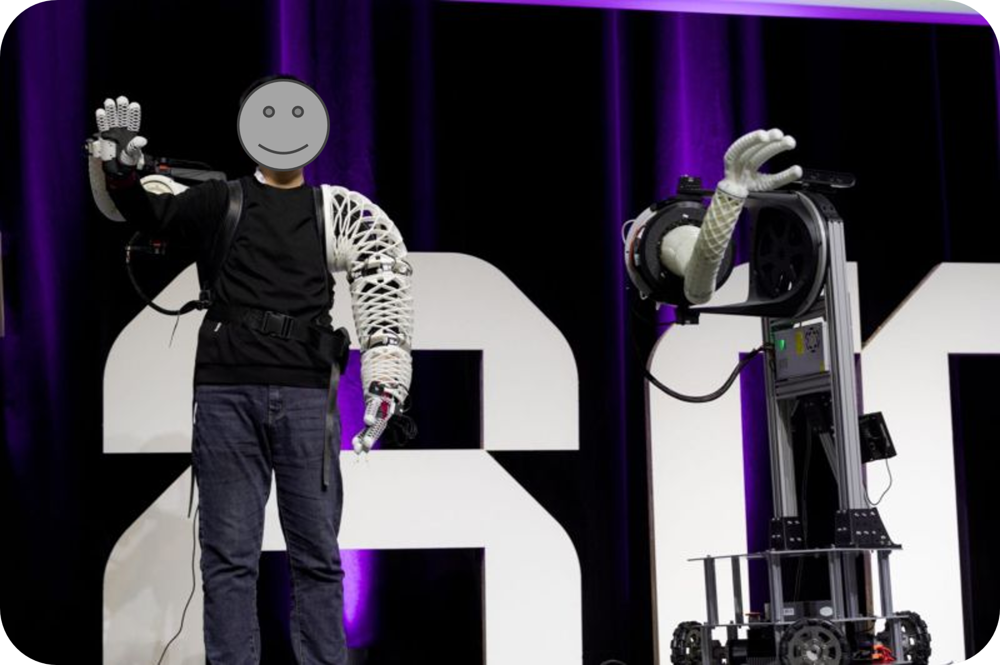
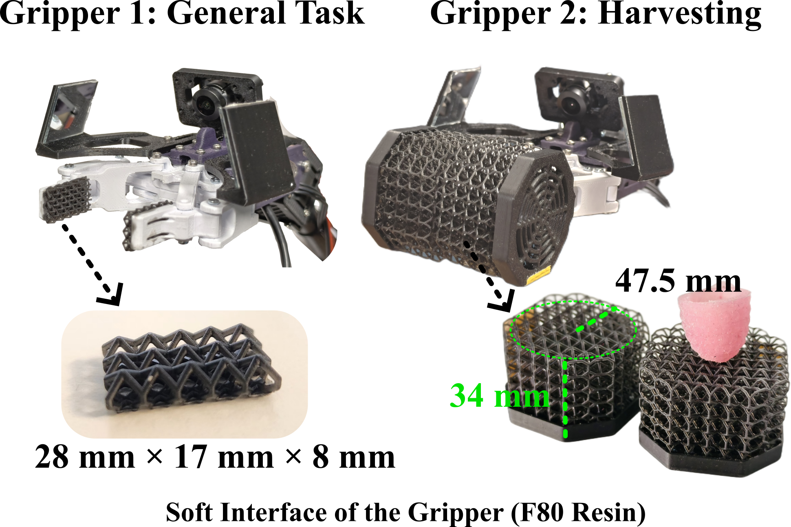

Soft & Compliant Robotic Systems
Rigid robots are strong and precise, but they interact with the world in one mode: hard contact. Soft robots offer something different — bodies that deform, conform, and absorb, making contact that is inherently safe and adaptable. The challenge is that softness without structure is just floppiness. This work is about designing the geometry of soft materials so their compliance is programmable: deforming in exactly the directions and magnitudes you want, while resisting in others.
Human fingers are extraordinarily capable because they combine compliance with geometry — curved surfaces, distributed contact, and the ability to wrap around objects. The Offset Trimmed Helicoid (OTH) gripper replicates this principle in a three-finger soft structure. Each finger follows a helicoid geometry that produces natural, finger-like curling under actuation, enabling dexterous grasps and soft, safe contact — the kind of interaction required for handling delicate objects or working alongside humans.
The same structural principles that make a gripper safe to grasp with also make a wearable structure safe to wear. A soft exoskeleton built from the similar design can conform to the human body, deliver assistive forces, and absorb impacts — without the rigid shells and hard hinges of traditional exoskeletons that constrain natural movement. This extends the reach of soft robotics from manipulation to human augmentation: wearable structures that assist, protect, and interface directly with the body, as well as providing a compliant body for mobile manipulators that can work safely alongside people.

Beyond individual grippers, the deeper question is: can you design the mechanical behaviour of a soft body from first principles? Lattice structures — periodic geometric networks — make this possible. By varying the topology and anisotropy of the lattice, you control which directions the structure is stiff, which it is compliant, and how it deforms under load. This work shows how programmable lattice geometry can produce musculoskeletal robot bodies that deform in precisely specified ways, opening the door to soft robots whose physical behaviour is engineered rather than discovered by trial and error.
The same lattice design principles extend directly to functional end-effectors. By tuning the geometric topology, a lattice structure can be designed to conform around an object, grasp it gently, and simultaneously sense contact forces — all without a single rigid component. This makes lattice-based grippers and sensors inherently safe for delicate tasks such as harvesting soft fruit without bruising.

Ongoing work extending the lattice structure framework: